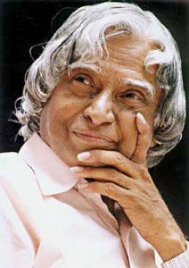

Remembering
"The Missile Man of India"

Dr. APJ Abdul Kalam
(15th October, 1931 - 27th July, 2015)
- Avul Pakir Jainulabdeen Abdul Kalam was an Indian aerospace scientist who served as the 11th president of India from 2002 to 2007.
- He was born and raised in Rameswaram, Tamil Nadu and studied physics and aerospace engineering.
- He spent the next four decades as a scientist and science administrator, mainly at the Defence Research and Development Organisation (DRDO) and Indian Space Research Organisation (ISRO) and was intimately involved in India's civilian space programme and military missile development efforts. He thus came to be known as the Missile Man of India for his work on the development of ballistic missile and launch vehicle technology.
- He also played a pivotal organisational, technical, and political role in India's Pokhran-II nuclear tests in 1998, the first since the original nuclear test by India in 1974.
- Kalam was elected as the 11th president of India in 2002 with the support of both the ruling Bharatiya Janata Party and the then-opposition Indian National Congress.
- Widely referred to as the "People's President",he returned to his civilian life of education, writing and public service after a single term.
- He was a recipient of several prestigious awards, including the Bharat Ratna, India's highest civilian honour.
- When Dr. Kalam became the President of India in 2002, he was supposed to address students at a school function. But when he reached there to start his speech, the electricity suddenly went off. Instead of complaining, he asked the students to gather around to listen to him.
- When he was the President of India, he used to donate all his savings to the social cause- Pura (Providing Urban Amenities in Rural Areas), a strategy for rural development in India.
- While delivering a lecture at the Indian Institute of Management Shillong, Kalam collapsed and died from an apparent cardiac arrest on 27 July 2015, aged 83. Thousands, including national-level dignitaries, attended the funeral ceremony held in his hometown of Rameswaram, where he was buried with full state honours.
"Don’t take rest after your first victory because if you fail in second, more lips are waiting to say that your first victory was just luck." – Dr. A.P.J Abdul Kalam.
Achievements and honours
| Year of Award |
Name of Award |
| 1981 | Padma Bhushan |
| 1990 | Padma Vibhushan |
| 1997 | Bharat Ratna |
| 1997 | Indira Gandhi Award for National Integration |
| 1998 | Veer Savarkar Award |
| 2000 | Ramanujan Award |
| 2007 | Honorary Doctorate of Science |
| 2008 | Doctor of Science |
| 2009 | Hover Medal |
| 2013 | Von Braun Award |
Books, documentaries and popular culture